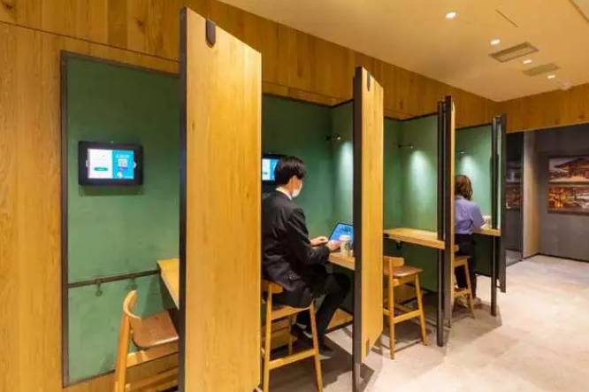
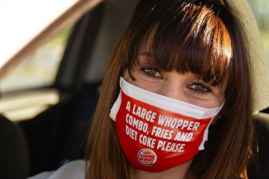
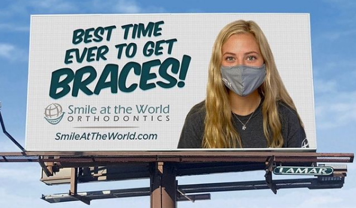
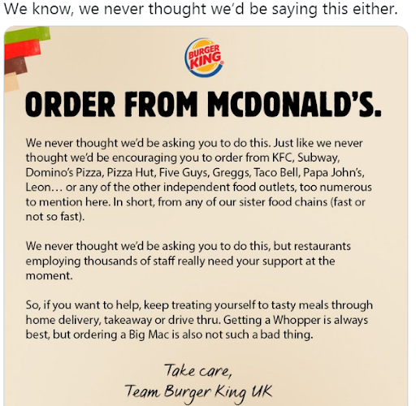

Once Duke Ellington said, “A problem is a chance for you to do your best.” True that! Business is an all-time game. You have to play at it every time even though the circumstances are not that supportive. Recently with the COVID-19 outbreak, many businesses cracked and crumbled. But there are a few brands that took advantage of it and changed the tide over for their benefit.
Here is how these 6 brands shined during this gloomy time:
Wipro Touch-free Lights:
Of late, we have become super afraid of touching things. Wipro lights have a product that doesn’t let you touch switches to on/off. It has made a beautiful Ad that portrays a frontline doctor returning from the work avoiding contact with switches and opt for a voice command to light up the room. His daughter waits for his arrival and takes care of him. It shows how we should share love from a distance apart.
https://youtu.be/QnOCT02XvnQ
Video Courtesy: Wipro Lights
Before the pandemic, the smart lights seemed like a luxury. Now, Wipro is pitching it as a necessity. This is an Ad done right at the ultra-right time.
Starbucks’ working space:
One of the smartest business strategies is to adapt to the situational needs of the customer.
Let’s all admit it! We are in the ‘Enough is enough’ phase of Work from Home. Aren’t we just yearning for a workspace setup? Keeping in view of this, a Starbucks outlet in Japan understood the ‘work from home’ pain point and implemented a working space replica in their store.
In collaboration with Think Labs, they are offering private and shared workspace that perfectly suits video calls and conference meetings. Customers can book their spaces on the App and can suffice their coffee cravings too.

Image Courtesy: Starbucks
Master strategy used here: If your product sales go down, add the thing in demand, and sell your product along.
Mask Innovation:
Gone are the days when we used to notice masks only in operation theatre movie scenes. How alien it was! Fast forward to 2020, a mask is an indispensable thing that ought to be tagged along. Two companies touched the creative peak by innovating these regular wear masks.
Burger King
Burger King went one step ahead in curbing the spread of coronavirus. They started printing orders on the masks so that the customers don’t even need to speak. It is interesting as well as a sensible initiative.

Image Courtesy: Burger King
Happy Dent:
A food and beverage company called ‘Happy Dent’ commenced its ‘Unmask your smile’ campaign. We are all living in a dark and depressed phase of our lives. By hiding our faces with masks we are also covering up our beautiful smiles. As we cannot exchange smiles visibly, Happy dent began the customized masks featuring people’s smiles.
Image Courtesy: Happy Dent India
This small act of spreading joy is impactful and refreshing at times like this!
Smile at the world’s Braces:
We all cringe at the thought of opting for braces. Not just because of the looks but for the awkwardness to show them in public. But now, it's a perfect time to put one. Masks on and Braces hidden! Smile at the World Orthodontics - a clinic in Texas, USA has created this brilliant Ad campaign:

Image Courtesy: Smile at the World
We couldn’t agree more! Your business won’t go south if you are clever enough to match the product and the situation.
Burger King’s request to order from its rivals:
A Business becomes a brand when it does something memorable to its customers. People will stay when your business becomes more humane. Burger King touched our hearts when it asked us to order from its competitors. You might be wondering how that might happen.0
When many employees of food outlets are losing jobs and facing salary cuts, Burger King wanted customers to help with the financial crisis. Here’s the soulful message:

Image Courtesy: Burger King
Being a giant food company, there is no need for them to do this. Still, they did lend hands to fellow humans. Show compassion and break down all the rivalry during such tough times. Because Humanity wins every other strategy!
Final word:
This article covered brilliant marketing techniques followed by various companies. Be it a small or big company, your innovative marketing skills will only help you thrive in difficult times as it is the ‘survival of the wittiest era’. Initiate, innovate, and inspire!